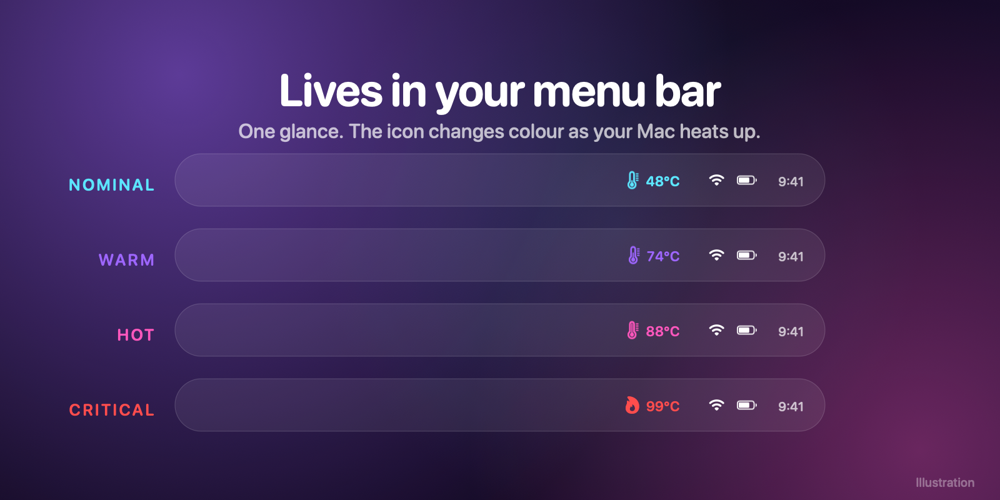
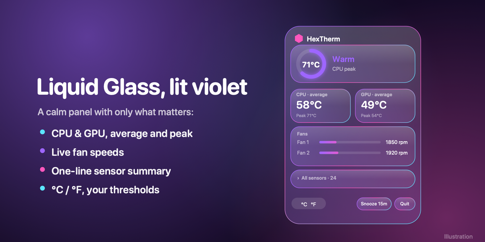
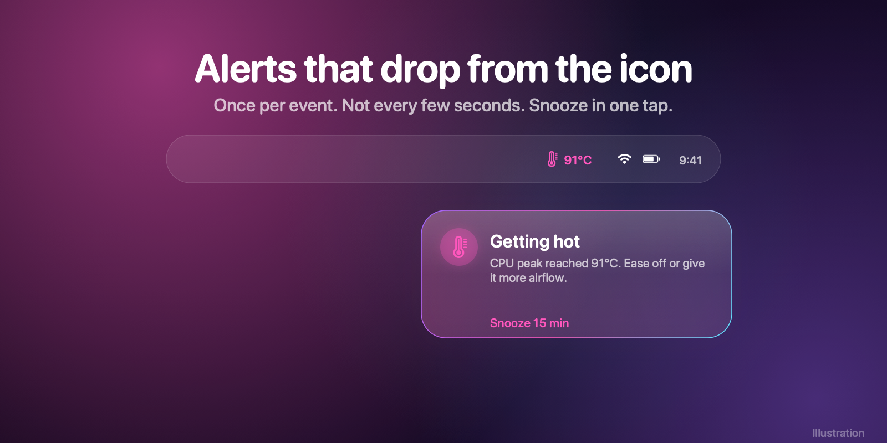
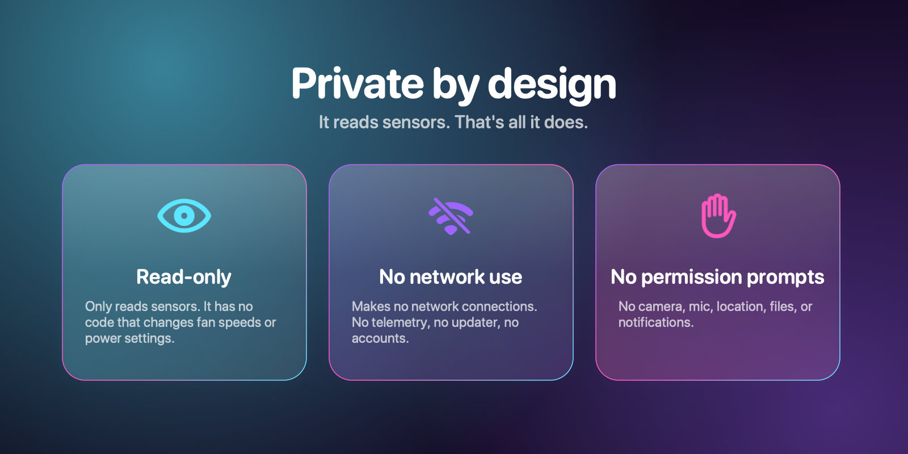

HexTherm is a free, quiet Mac menu bar app for CPU and GPU temperature, fan speed and overheating alerts. No dashboards, no accounts, no network.
⬇ Download for MacMost Mac system monitors bury the one number you want. HexTherm shows temperature, fan speed and a heads-up when it matters.

A tiny icon and number that shifts from cyan to violet to magenta to red as your Mac heats up. Sits right beside the notch on MacBook Pro.

Click for CPU and GPU average and peak, live fan RPM and a one-line sensor summary, in a panel that matches macOS 26.

When your Mac runs hot, a small card appears right under the icon. Once per event, never spammy, with one-tap snooze.

It only reads sensors. No network connections, no telemetry, no permission prompts. It reads temperatures and that's all.
Also: °C/°F, adjustable refresh rate, your own warm / hot / critical thresholds, launch at login, an optional hover widget that hugs the notch, and graceful handling of fanless MacBook Air models.
HexTherm-x.y.z.dmg and open it.xattr -dr com.apple.quarantine /Applications/HexTherm.app
Prefer Homebrew? brew install --cask 001hex/tap/hextherm
Yes. It's a universal app and discovers your Mac's sensors at launch instead of relying on a fixed list. It was developed and tested on an M4 Max MacBook Pro; if a reading looks off on your model, please open an issue with your Mac model.
No. It's read-only: it only reads sensors and has no code that changes fan speeds or power settings.
No data is collected. HexTherm makes no network connections and has no telemetry, no updater and no account. It isn't sandboxed, so macOS wouldn't stop it from connecting if it tried; a free firewall like LuLu or Little Snitch will confirm it never does. It asks for no camera, microphone, location, files or notification permissions.
HexTherm isn't notarized by Apple yet (that requires a paid developer account), so macOS blocks it the first time. Use System Settings → Privacy & Security → Open Anyway, or run the xattr command above. You can verify your download against the SHA-256 on the release page.
Those are excellent and do more, including fan control and dozens of sensors. HexTherm deliberately does less: temperature, fan speed and heat warnings in one quiet menu bar item, free, offline and read-only.
HexTherm shows what your Mac's System Management Controller reports, the same source other Mac monitors use. It filters out placeholder and non-temperature values, and shows average and peak per category, since different sensors sit in different places on the chip.
Yes. It detects there are no fans and shows temperatures only.
No. HexTherm is free, closed-source software by Hex Modifications. See the EULA.